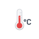
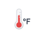

Weather Icons Usage Examples
1. Basic Usage with <img> tag
This is the simplest way to use the icons:
celsius.svg
fahrenheit.svg
sunny.svg
cloudy.svg
2. Different Sizes
Use different CSS classes for different sizes:
Small (16px)
Medium (24px)
Large (48px)
Extra Large (64px)
3. Weather Condition Icons
Common weather condition icons:
clear-day.svg
clear-night.svg
partly-cloudy-day.svg
partly-cloudy-night.svg
cloudy.svg
overcast.svg
rain.svg
snow.svg
thunderstorms.svg
fog.svg
haze.svg
4. Weather Information Icons
Icons for weather information and measurements:
thermometer.svg

thermometer-celsius.svg

thermometer-fahrenheit.svg
wind.svg
humidity.svg
uv-index.svg
pressure-high.svg
pressure-low.svg
sunrise.svg
sunset.svg
5. JavaScript Usage Example
How to dynamically set weather icons in JavaScript:
// Example function to set weather icon based on condition
function setWeatherIcon(condition) {
const iconMap = {
'clear-day': 'clear-day.svg',
'clear-night': 'clear-night.svg',
'partly-cloudy-day': 'partly-cloudy-day.svg',
'partly-cloudy-night': 'partly-cloudy-night.svg',
'cloudy': 'cloudy.svg',
'overcast': 'overcast.svg',
'rain': 'rain.svg',
'snow': 'snow.svg',
'thunderstorms': 'thunderstorms.svg',
'fog': 'fog.svg',
'haze': 'haze.svg'
};
const iconElement = document.getElementById('current-weather-icon');
const iconPath = `weather-icons-master/design/fill/animation-ready/${iconMap[condition]}`;
iconElement.innerHTML = `<img src="${iconPath}" alt="${condition}" class="weather-condition-icon">`;
}
// Usage example
setWeatherIcon('clear-day');
6. Available Icon Categories
The weather-icons-master package includes icons for:
- Weather Conditions: clear-day, clear-night, partly-cloudy-day, partly-cloudy-night, cloudy, overcast, rain, snow, thunderstorms, fog, haze, etc.
- Temperature Units: celsius.svg, fahrenheit.svg
- Weather Measurements: thermometer.svg, wind.svg, humidity.svg, uv-index.svg, pressure-high.svg, pressure-low.svg
- Time-based: sunrise.svg, sunset.svg, moonrise.svg, moonset.svg
- Special Conditions: tornado.svg, hurricane.svg, lightning-bolt.svg, etc.
7. Troubleshooting
If icons are not showing:
- Check that the path to the SVG file is correct relative to your HTML file
- Verify that the SVG file exists in the specified location
- Make sure the file permissions allow the web server to read the files
- Check the browser's developer console for any 404 errors
- Try using an absolute path or moving the icons to your assets folder